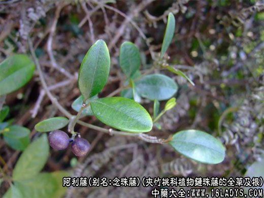

阿利藤，始载《福建民间草药》。
别名：念珠藤，瓜子藤，山红木，过山香，过骨边。为夹竹桃科植物链珠藤的全草及根。披散或藤状，秃净灌木。花期7月。
产地：野生山地、林木间。分布浙江等地。
性味：味苦辛，性温，有小毒。
归经：《闽东本草》：“入肺，肝，脾三经。”
功效与作用：祛风利湿，活血通络。治风湿性关节痛，脾虚泄泻，脚气，周身浮肿，妇人经闭，跌打损伤。内服：煎汤，9～12克(鲜者30～60克)；或浸酒。《闽东本草》：“阴虚发热，肠胃伏热及妇人怀孕者皆所禁用；忌与牛奶仔，穿山龙同用。”
处方举例：
①治风湿性关节痛：阿利藤根30～45克，猪蹄1只。酌加酒、水各半，炖服。
②治脾虚泄泻：阿利藤干根30克，鼠曲草根15克。水煎服。
③治湿性脚气：阿利藤干根或茎15～30克，六棱菊30克。酒水炖服。
④治水肿，跌打损伤：阿利藤、鸡血藤各等量。浸酒内服，每早晚饮服1次，每次一小杯。或和水酒炖猪赤肉服。
⑤治闭经：阿利藤90克。煎汤去渣，调红糖服。
⑥治跌打损伤：阿利藤根30～60克。酌加酒、水各半，炖服。
⑦治腰闪痛：阿利藤12克，红酒120克。炖服。
⑧治风火齿痛：阿利藤鲜根15～24克，酌加开水炖服。